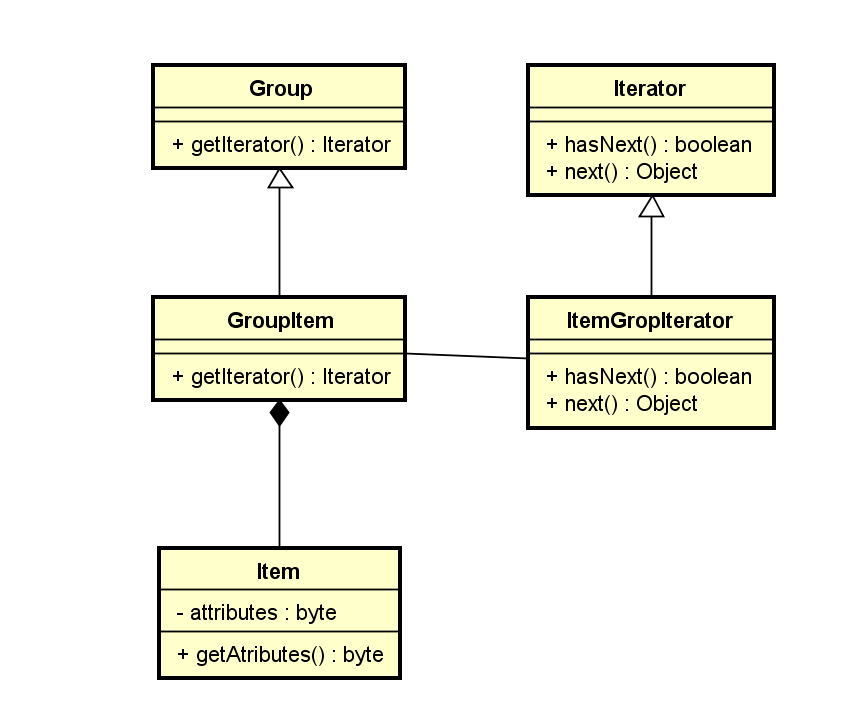

Iterator
Descrição:
O Padrão de Projeto Iterator tem como objetivo encapsular uma iteração. O Padrão de Projeto Iterator depende de uma interface chamada Iterator, conforme pode ser vista abaixo:
Diagrama de Classes genérico do padrão:
">Exemplo:
A ideia do exemplo apresentado no livro é criar um menu diversificado de vários tipos e iterar por eles.